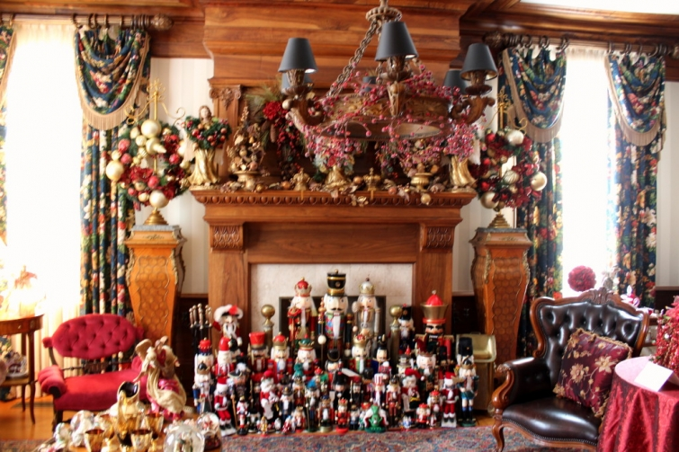

.png)
.PNG)
.PNG)
.PNG)
.PNG)
.PNG)
.JPG)
.JPG)
.PNG)
.PNG)


House #1
This home was very period appropriate and had speakers telling about the history of it. I only photographed the main living area here.
House #2
The owner of this home loves decorating for Christmas and has a massive collection of just about everything imaginable. If it related to Christmas – she had a collection. 🙂 (Sorry for the fuzzy photos – in a hurry and no tripod.)

House #3
This old home was very well done and classic in feel.
Loved the fabric on the chairs below.Cute vignette on the kitchen counter.An amazing stove…The staircase was beautiful,and this stained glass window was at the first landing.A gentleman’s library.
House #4
This home had a dark rich color scheme.
The butler’s pantry was one of my favorite things on the entire tour.
Here is the breakfast area off the kitchen. On the table, they had photographs of previous owners and old newspaper articles that told the history of the home from when it was built to the present. I thought that was a great addition to the tour.
House #5
This was a little cottage that was currently being renovated. The ceilings were made from reclaimed lumber. The owner was such a sweet lady – offering all the guests warm chocolate chip cookies and hot cider. 🙂
Isn’t the cabinetry beautiful?
House #7 (yes, I am skipping #6)
This home was over the top. I believe a professional designer did the holiday decorations (and possibly had his home on the tour last year…but I am not 100% sure about that.)
There were 2 fireplaces in the living room.A little nook off to one side of the living room.This is the kitchen island set for Christmas.This wall of cabinets was behind the island.This is the tree that you see from the kitchen.
And this area, right off the kitchen, was my favorite space in that home. Love that corner seating with all the cute red pillows!
It is a lot of work to prepare a house to be on a Christmas tour, and it also involves a huge dose of trust in people to allow a large number of strangers to roam through your personal residence. Because of that, I have purposely split this tour into exteriors and interiors and did not match them together to protect the privacy of the people who so generously opened their homes to visitors. Obviously, I did not photograph everything about every home. There were some whose exteriors were more to my liking than their interiors, and vice versa. I have numbered the houses just for the sake of my photo files, and the numbers do not match up with their number on the tour. Got all that? I just wanted you to understand my thinking on all of this.
Still scurrying around here. BHG called today. In addition to the photoshoot for the Christmas Ideas magazine, they are going to send a crew an additional day to do a video tour for their website. Glory! I said Yes, as long as I don’t have to be on camera. 🙂
Much to do…………………
Thank you all sooooo much for all the get well wishes for both me and my father in law. My mother in law was also hospitalized yesterday but has since been released. I am doing much better. Wish I could say the same for my father in law, but I am afraid not. Keep those good thoughts coming for him.
I hope to be back with part 2 (my very favorite house on the tour) tomorrow. If I don’t make it then, it will be Christmas Day. Hope you are enjoying time with your family.
Until next time…


.PNG)
Merry Christmas & get well wishes to ALL in your family! Congratulations also on your son’s acceptance to Yale-you & your family must be extremely proud. Thank you again for a great “place” to come visit.
Gosh – my Christmas wish is for all of you to get well! Lovely post. Hope you don’t mind me including links to my two favorite Christmas commercials 🙂
https://www.youtube.com/watch?v=CfkGKdXXpVM
https://www.youtube.com/watch?v=qjDwEOuxqNU
What a tour! So many styles! Can’t wait for part two. So excited for you! You have come a long way in a short time of blogging! Congrats!
You and I have similar taste as I also like the stove, staircase and Butler pantries. These make me drool.
May you and your family have a very Merry Christmas and the Happiest of New Years!
Kelly, thoughts and prayers for you and your family. Thank you for thinking of us and providing these posts during a difficult time. I always look forward to your blog. Congrats to your son and to your magazine photo shoot with BHG! ! And last, thank you for introducing me to Mitford. I am on a wonderful journey!
Take care.
Love these homes!!! I want to come visit next year!! Thanks for sharing with us!!
Beautiful homes Kelly…May you have a most joyous Christmas with your family!!!
Merry Christmas!
Many years ago, my family’s home was on a Christmas tour. Even at 9 years of age, I worried (more than my parents did, obviously) about someone using the tour to “case the joint.” Consequently, I applaud your thoughtfulness and sensitivity in taking measures to protect the privacy of the homeowners whose houses are showcased.
Not to sound like a Fan Girl, but I LOVE your blog and get a “leap of the blood” whenever I see a new Talk of the House post among my emails! You are right on target with my decorating sensibilities — or the ones I wish I possessed! Of all the gorgeous places you’ve highlighted, none is more appealing to me than your own warm and inviting home. I all but drool over your holiday photos, and have added many of them to my idea book for our house re-do, whenever that may occur.
I’m sure I speak for many of your readers in extending deepest thanks for the many bursts of happiness you’ve delivered via your posts! I’m keeping you and your family in my thoughts for the holidays, and wish you all a swift return to good health, and all good things in the new year.
Kelly,
I liked some of the furniture in each of the houses, overall I think I liked the most in House #3. I can’t wait to see your favorite, I usually love your favorites.
I’m sorry to hear your father in law isn’t recovering as quickly as hoped. I will say a little prayer for him and for your continued recovery.
By the way, I’m preparing the tapanade recipe you posted several months ago. I made it once before and everyone voted it a winner so I’m preparing it for an appetizer for our Christmas Eve dinner.
Best to you this holiday.
xo,
Karen
Kelly…..what a great tour…while there have been so many, this was one of my favorites….I can’t wait to see more!!!!
Kelly, what wonderful news about you son. That is something to be very proud of. Congrats to him and you for your BHG house shoot. Looking forward to seeing your home in print.
Praying that your strength holds up and for you father in law and for husband, I know from experience this is a difficult time for him.
Merry Christmas, Cindy
For the three years I lived in Warner Robins I attended the Macon Tour of Homes. Never attended anything since that rivaled it. (It’s been 10 years.) So this was thrilling. It also made me think about Maconite Mark Ballard, whom I haven’t thought about in years but man, could he decorate!
Health and happiness to you and yours in the new year!
Any house with a library, leather chair and loads of books gets my vote for favorite room. So many beautiful things to see. You are wise (and thoughtful) to mask the locations of the homes.
Hope everyone feels on the mend soon.
Merry Christmas!
Okay, now I’m not feeling so bad about all the nutcrackers in my house…someone else has a far more serious addiction–er, collection. 🙂 I’m with you on that butler’s pantry–love at first sight (and second, and third sights too). Beautiful!
Continued prayers going up for your father-in-law. I’m glad you and your MIL are feeling better. Praying that 2015 brings you all joy, good health, and rest!
Love looking at all the different decorations– however, I enjoy your decorations and tablescapes the most and especially your porch!! It is just my favorite place to “visit” in your home!! Every season it seems you come up with the best ideas and make it feel all different. The chalk boards are so “you” and it truly amazes me how you keep coming up with all the ideas to feature on them! I now have 3 in my home and enjoy creating on them. Usually a couple of sayings and a menu. Baking is done and tomorrow one more run to Publix and an all oven meal on Christmas Day!! Trying to keep it simple but still having something everyone likes. Hope this bad weather front passes you by! Peace, joy and love to you and yours.
Kelly,
Thank you for the sweet tour. I appreciate all of your nice photos. I am sending prayers your way for good health for all in your family and extended family. Enough of the sickness and hospitalization all ready. I wish you all a healthy and happy Christmas eve and Christmas!
Thank you for this post. I found a solution to my snow village issue. I have mine on two small long tables. Not many places to put it. House #7 has one that looks to be set up on a square arrangement. That set up would work better for my home. Now I can’t wait to try it next year!